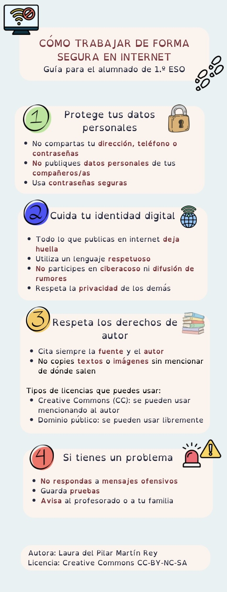

DESCRIPCIÓN
El proyecto se centra en el estudio de la Prehistoria, a través de un aprendizaje basado en la investigación y simulación de una excavación arqueológica. Así pues, investigaremos sobre las distintas herramientas utilizadas en la Prehistoria y elaboraremos un libro digital informativo con las piezas trabajadas que, posteriormente, encontraremos en la excavación.
Por lo tanto, el centro de interés será la Prehistoria y su producto final un libro digital informativo y la excavación arqueológica simulada realizada en el huerto del centro.
Pero... para empezar, echa un vistazo a estos consejos de protección en la red.

Laura del Pilar Martín Rey. Cómo trabajar de forma segura en internet. Creative Commons CC-BY-NC-SA 4.0.